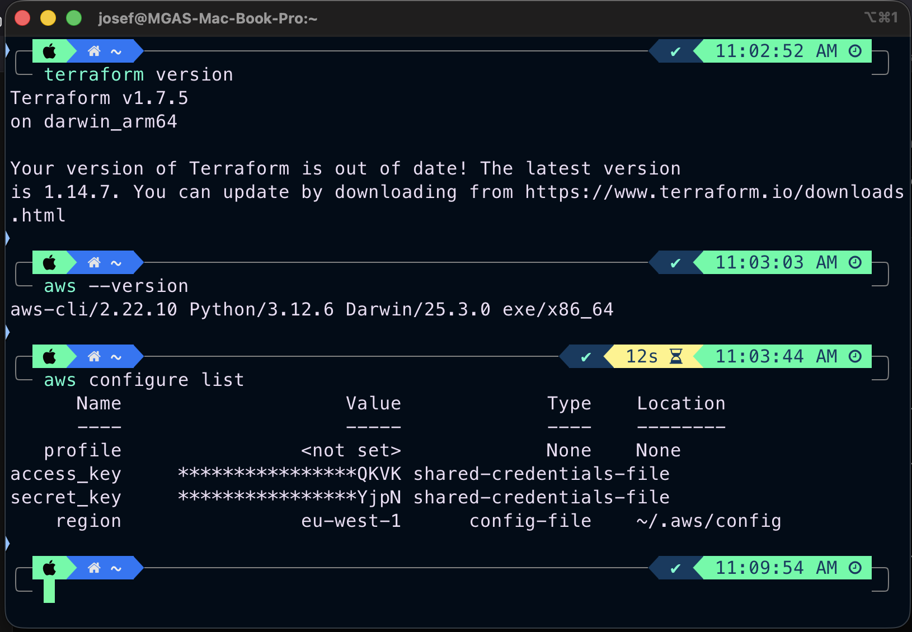
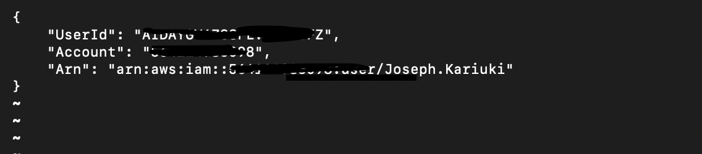

This step by step instruction guide is meant to walk you through setting up Terraform with AWS CLI so that you can provision infrastructure from code instead of manually clicking through an AWS console. Minimize the manual stuff, automate the actual stuff.
Steps include:
Check if Terraform is installed:
terraform versionIf not installed, on Mac run:
brew install terraformVerify installation:
terraform versionCheck if installed:
aws --versionIf not installed:
brew install awscliRun:
aws configureEnter:
Test configuration:
aws sts get-caller-identityCreate a directory:
mkdir tf-day2 && cd tf-day2Create a file called main.tf:
provider "aws" {
region = "us-east-1"
}
resource "aws_vpc" "main" {
cidr_block = "10.0.0.0/16"
}terraform initterraform planterraform applyType yes when prompted.
To avoid unnecessary costs:
terraform destroyterraform initAWS CLI Configuration

Terraform Setup

You now have a working setup for provisioning AWS infrastructure using Terraform. This forms the foundation for more advanced workflows.